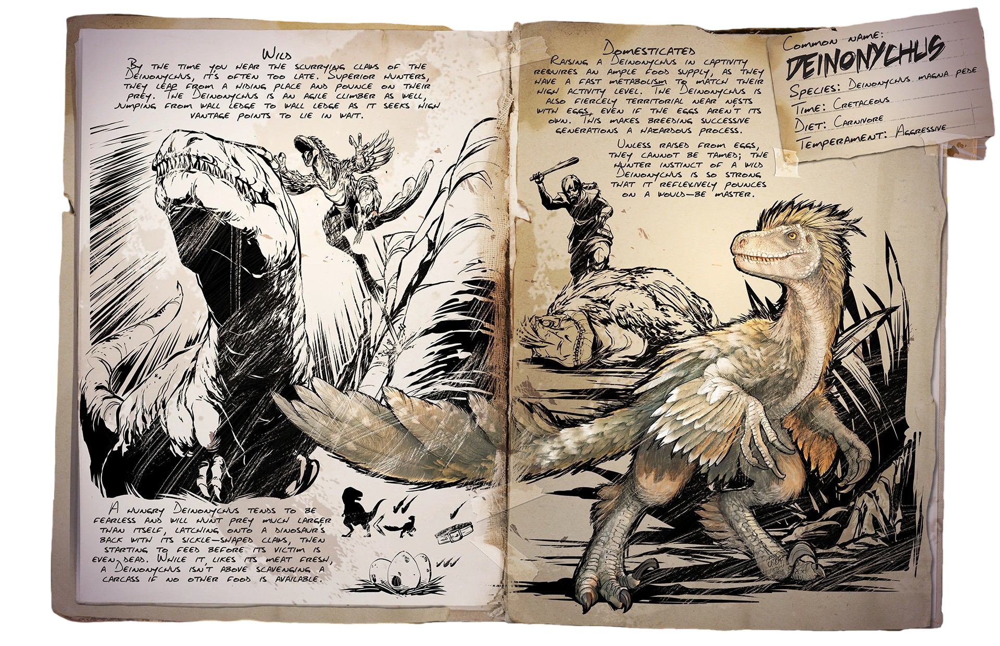
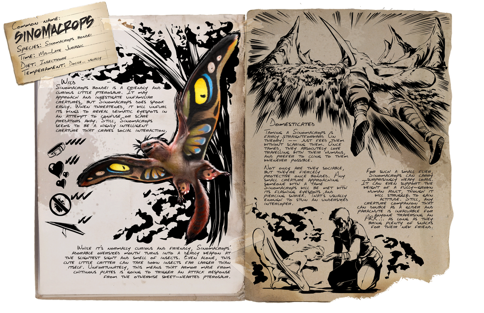

|
El segundo en la cima de la cadena alimenticia es el Tiranosaurus Rex, un feroz ser que no le teme a nadie,
incluso cargará contra la más fuerte de las criaturas sin miedo a la muerte, su fuerza bruta respaldará
cualquier cosa que esté ser haga. |
|
El espinosaurus es una gigantesca criatura cuadrúpeda que ronda los pantanos de todos los mapas. Aunque
generalmente anda a 4 patas, tiene la capacidad de pararse en sus dos patas traseras para desgarrar a sus
presas con sus garras delanteras. |
|
Los Segadores son una especie desconocida nacida del fondo del arca Aberration, seres poderosos que no
toleran la luz natural de ningún tipo, estos seres no pueden reproducirse entre ellos, sino que recurren
a otras especies para impregnarlas con un embrión de reaper, son una raza matriarcal donde la hembra es
más fuerte e incluso más grande que el macho. |
 |
En los bastos desiertos de Scorched Earth se pueden ver zonas donde pareciera que la arena cobra vida,
pero en realidad son los peligrosos gusanos de la muerte buscando a sus presas para enterrarlas y comerlas
sin que opongan resistencia, son criaturas tan salvajes que es imposible domesticarlas. |
|
El ceratosaurus, una criatura veloz para su tamaño, grandes criaturas que una vez empiezan a correr
difícilmente podrás detenerlos contra su voluntad, poseen una coraza puntiaguda que los cubre. Aman
la sangre por lo que para domesticarlos hay que aprovecharnos de sus gustos exóticos. |
|
El Giganotosaurus es considera el apex predator ya que no hay nada ni nadie que le haga frente, come
lo que quiere, caza a quien quiere y no se detiene por nada, cuando es herido se enfurece y entra en
un estado más salvaje de lo que podrías imaginar. |
|
Carcharodontosaurus, hermano lejano del Giga, es una criatura feroz y salvaje, a diferencia de su
hermano, no se enfurece cuando es herido, sino que está criatura se enloquece cuando comienza la
masacre, ganando poder en peleas largas contra varios enemigos. |
|
En las oscuras cuevas de Aberration se pueden encontrar reptiles gigantes con forma de serpiente.
Los Basiliscos son enormes criaturas que reptaran por los suelos o incluso por debajo de los mismos,
pueden escupir poderosas bolas de veneno que podrían matarnos al simple tacto, está especia ama los
huevos de Rockdrake, tal vez podamos volverlos dosiles con eso. |
|
Los Velociraptors son una especie rápida, veloz y sobre todo mortal, rondan los bosques frondosos en
manadas donde se comunican usando sus rugidos, si logras escucharlos seguramente sea muy tarde para
ti, la mejor forma para huir de ellos es utilizar boleadoras para inmovilizarlos, al menos por un rato. |
 |
El asesino de gigantes, rápido, agresivo y letal, el Deinonychus es una criatura pequeña en comparación
a sus presas, se coordinan en manada para derribar hasta la más grande de las bestias, gracias a su sangrado
acumulativo son capaces de someter hasta los gigantes Tiranosaurus Rex. |
|
En la copa de los arboles del Reedwood el Thylacoleo espera con ansias a que cualquier criatura se acerque
a la base del árbol para así saltar y embestirlo contra el suelo, luego lo desangrara con sus fuertes fauces
hasta que no quede rastro de vida en su presa. |
|
El Dodo es una criatura pequeña e inofensiva que circula por las playas, los valles o incluso en las montañas,
son pequeñas aves terrestres sin capacidad de vuelo que nos servirán como alimento durante el comienzo de nuestra aventura. |
|
Dentro de los mares de Ark podremos ver a los Basilosaurus rodeados de una manada de mantarrayas en una relación interespecial
mutualista, el Basilosaurus recibe comida de las rayas mientras que estás se ven protegidas por el poderoso Basilo. |
|
En las profundidades del mar se encuentra el Mosasaurus, una criatura gigantesca la cual suele
viajar sola en busca de alimento, cosa que no es muy difícil ya que con su enorme mandíbula pocas
cosas logran escapar de ella, sin contar su increíble velocidad en las aguas. |
|
En lo más profundo de algunos mares podremos ver a los gigantescos Tusoteuthis, calamares enormes de un solo ojo que rondan
el fondo marino buscando perlas negras que comer, adoran las perlas negras. Está criatura es considerada la mas poderosa de
los mares, puesto que disputa con el Mosasaurus. |
|
Dentro del domo de la nieve en Extincion podrás encontrar estás elegantes criaturas congelando a
sus presas, se tratan de seres corrompidos por el Elemento, aunque no lo suficiente para hacerlos
indomesticables, poseen la capacidad de impulsarse por el aire y de aterrizar con fuerza congelando
la zona de impacto. |
|  |
Los sinomacrops son pequeñas criaturas voladoras que habitan en el mapa de Lost Island. Estos pequeños
se vuelven locos por la chitina, tanto que debemos domesticarlos con ella. Una vez domesticados, estos
nos acompañaran en nuestra espalda, permitiéndonos volar, caer en picada, salir del mar libremente o
tener una caída libre lenta. Este amiguito puede llegar a salvarnos la vida mas de una vez y nos puede
ser muy versátil para demasiadas cosas que podremos realizar en el Ark. |
|
La criatura más majestuosa y elegante que aparece únicamente en las tormentas de arena ardiente
en el mapa Scorched Earth, si quieres tener un Fénix debes de saber que adora el fuego, la mejor
forma para domesticarlo es dispararle llamaradas desde wiverns, lanzallamas o incluso flechas
incendiarias. |
|
Los ankylosauros son unas de las criaturas mas primitivas de Ark. Estos suelen encontrarse normalmente en varios
mapas del juego y son sencillos de domesticar. Sin duda esta criatura destaca por su gran cantidad de farmeo de
recursos y reducción de peso en los mismos. También este puede ir farmeando piedras de metal mientras es agarrado
por un argentavis, asi ahorrándonos tiempo. |
|
El argentavis es una de las criaturas mas primitivas de Ark, esta asombrosa ave volador es capaz
de transportar una abismal cantidad de peso, ademas de tener reduccion de peso en muchisimos materiales/recursos.
Si esta criatura come un cadaver de otra, podra curarse a una gran velocidad. Su movilidad aerea es limitada al
igual que su capacidad de combate, pero cumple bien su funcion como cargadero. |
|
Los Wiverns, majestuosas y gigantescas criaturas aladas, muchos los confunden con dragones,
pero no son lo mismo, estos Wiverns pueden ser de varios tipos, Fuego, Rayo, Veneno o incluso
Hielo, cada uno teniendo características y aspectos diferentes. |
|
Los ember wyverns de cristal, son criaturas que habitan exclusivamente el mapa de Crystal Isles. Podemos
hallar a estos voladores tanto en su gran nido principal (junto a sus dos otros tipos) que esta ubicado en
el desierto en el sur del mapa o también pueden ser encontrados en el volcán que se ubica en el medio del
mapa. Este tipo de wyvern es muy similar al de fuego, pero guardan ciertas diferencias como que son mas pequeños
y que los ember poseen una llamarada mas poderosa que los wivern convencionales. |
|
Los tropical wyverns de cristal, son criaturas que habitan exclusivamente el mapa de Crystal Isles. Podemos
hallar a estos voladores tanto en su gran nido principal (junto a sus dos otros tipos) que esta ubicado en el
desierto en el sur del mapa o también pueden ser encontrados en la zona tropical ubicada en el suroeste del
mapa. Estos al tocar levemente el agua potencian su velocidad de movimiento durante unos segundos, otra caracteristica
son mas pequeños que los wyverns normales. |
|
Los blood wyverns de cristal, son criaturas que habitan exclusivamente el mapa de Crystal Isles. Podemos
hallar a estos voladores tanto en su gran nido principal (junto a sus dos otros tipos) que esta ubicado
en el desierto en el sur del mapa o también pueden ser encontrados cerca del medio del mapa y con su ataque
pueden robar vida a sus objetivos e infligir un gran daño. Estos son mas pequeños que los wyverns normales. |
|
El bloodstalker es una araña que estara en los lugares mas reconditos y oscuros del pantano de la simulacion
Genesis a la espera de una presa de la cual alimentarse. Esta criatura es capaz de columpiarse a gran
velocidad a lo largo del mapa, ademas que puede sorprendernos ya que es capaz de desmontarnos de nuestra
criatura. |
|
Los Desmodus, son criaturas ubicadas en algunas cuevas de Fjordur. Estos murcielagos estaran durmiendo en
el techo de las cuevas hasta recibir un estimulo que los despierte. Son los mejores recolectores de sangre,
poseen la mejor movilidad aerea, tienen vision nocturna y son capaces de crear elixir sanguineo que nos ayudara
a domesticar mas criaturas. |
|
Dentro del ardiente volcán de la simulación de Génesis se pueden ver enormes lagartos de magma
custodiando sus nidos sobre la lava, si logras esquivar sus proyectiles de lava, safarte de sus
fauces y conseguir un huevo podrás criar este raro espécimen para domesticarlo. |
|
El buho de las nieves posee una capacidad de vuelo altamente maneobreable, este
puede quedarse estatico en el aire instantaneamente, ademas de poder realizar caidas en picada. Esta ave
puede curar criaturas aliadas cercanas a el y tambien posee una vision termica desarrollada durante años
cazando en la nieve. |
|
Los dreadmares son criaturas fantasticas que solo aparecen por la noche en zonas muy raras. Estos poseen
una gran capacidad para cargar peso, moverse y ser agiles en el aire. Ademas, cuando estos son domesticados,
son capaces de capturar a una criatura domesticada en una dimension oscura y que dicha criatura conserve
todo su inventario. Para poder domesticarlo deberemos llevar tributos a su altar que nos otorgara luego de matarlo
y librar una batalla contra el cuando este resurga del mismo altar. |
|
Los pyromane, que poseen parentesco con los Shadowmanes, son criaturas fantasticas cubiertas de llamas,
capaces de lanzar fuego por su boca, dar grandes saltos, poder ajustar su tamaño a disposicion del domador
y reconocidos por su gran velocidad. Estes se encuentran en zonas calidas como volcanes o desiertos,
no es nada grato que uno de estos nos ataque, por lo que deberemos ser muy cautelosos cuando entremos en su
territorio. |